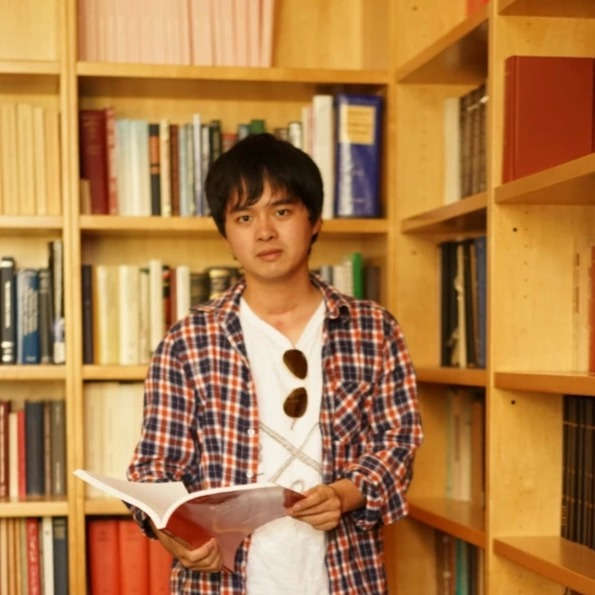

Kaifeng Chen
I am currently a Member of Technical Staff at OpenAI, working on computer use agents. Previously, I was a Member of Technical Staff at xAI and a Staff Research Engineer / Tech Lead at Google DeepMind.
My research interests include vision-language models, representation learning, retrieval systems, large-scale training, and AI agents. I earned a Ph.D. in Applied Physics and an M.S. in Electrical Engineering from Stanford University.
Experience
- OpenAIMember of Technical Staff, Reasoning
- xAIMember of Technical Staff, Reasoning/Omni
- Google DeepMindStaff Research Engineer, Tech Lead
- Pinterest LabsFull-time; previously Intern
Education
- Stanford UniversityPh.D. in Applied Physics; M.S. in Electrical Engineering, minor in MS&E
- University of Science and Technology of ChinaB.S. in Applied Physics, School of the Gifted Young
Publications
Full list is available on Google Scholar.
2026
- CVPRTIPSv2: Advancing Vision-Language Pretraining with Enhanced Patch-Text Alignment
Bingyi Cao, Koert Chen, Kevis-Kokitsi Maninis, Kaifeng Chen, Arjun Karpur, Ye Xia, Sahil Dua, Tanmaya Dabral, Guangxing Han, Bohyung Han, Joshua Ainslie, Alex Bewley, Mithun Jacob, René Wagner, Washington Ramos, Krzysztof Choromanski, Mojtaba Seyedhosseini, Howard Zhou, André Araujo
- ECCVCoCo-IR: Conversational Composed Image Retrieval
Shengcao Cao, Tanmaya Shekhar Dabral, Zhongli Ding, Madhuri Shanbhogue, Kaifeng Chen, Zhe Li, Mojtaba Seyedhosseini, Liangyan Gui, Yu-Xiong Wang
2025
- CVPRLearning Visual Composition Through Improved Semantic Guidance
Austin Stone, Hagen Soltau, Robert Geirhos, Xi Yi, Ye Xia, Bingyi Cao, Kaifeng Chen, Abhijit Ogale, Jonathon Shlens
- ICLRTIPS: Text-Image Pretraining with Spatial Awareness
Kevis-kokitsi Maninis*, Kaifeng Chen*, Soham Ghosh*, Arjun Karpur*, Koert Chen, Ye Xia, Bingyi Cao, Daniel Salz, Guangxing Han, Jan Dlabal, Dan Gnanapragasam, Mojtaba Seyedhosseini, Howard Zhou, Andre Araujo
- ICCV WorkshopGlobal-to-Local or Local-to-Global? Enhancing Image Retrieval with Efficient Local Search and Effective Global Re-ranking
Dror Aiger, Bingyi Cao, Kaifeng Chen, Andre Araujo
- ICCV WorkshopInfusing Fine-Grained Visual Knowledge to Vision-Language Models
Nikolaos-Antonios Ypsilantis, Kaifeng Chen, Andre Araujo, Ondrej Chum
2024
- CVPRLearning Vision from Models Rivals Learning Vision from Data
Yonglong Tian, Lijie Fan, Kaifeng Chen, Dina Katabi, Dilip Krishnan, Phillip Isola
- CVPRScaling Laws of Synthetic Images for Model Training... for Now
Lijie Fan, Kaifeng Chen, Dilip Krishnan, Dina Katabi, Phillip Isola, Yonglong Tian
- NeurIPSUDON: Universal Dynamic Online DistillatioN for Generic Image Representations
Nikolaos-Antonios Ypsilantis, Kaifeng Chen, Andre Araujo, Ondrej Chum
- NeurIPSMatFormer: Nested Transformer for Elastic Inference
Devvrit, Sneha Kudugunta, Aditya Kusupati, Tim Dettmers, Kaifeng Chen, Inderjit Dhillon, Yulia Tsvetkov, Hannaneh Hajishirzi, Sham Kakade, Ali Farhadi, Prateek Jain
2023
- ICCVTowards Universal Image Embeddings: A Large-Scale Dataset and Challenge for Generic Image Representations
Nikolaos-Antonios Ypsilantis, Kaifeng Chen, Bingyi Cao, Mário Lipovský, Pelin Dogan-Schönberger, Grzegorz Makosa, Boris Bluntschli, Mojtaba Seyedhosseini, Ondřej Chum, André Araujo
- ICCVGlobal Features Are All You Need for Image Retrieval and Reranking
Shihao Shao, Kaifeng Chen, Arjun Karpur, Qinghua Cui, Andre Araujo, Bingyi Cao
- ICML / KDD WorkshopBuilding One-Class Detector for Anything: Open-Vocabulary Zero-Shot OOD Detection Using Text-Image Models
Yunhao Ge, Jie Ren, Jiaping Zhao, Kaifeng Chen, Andrew Gallagher, Laurent Itti, Balaji Lakshminarayanan
2022
- NeurIPSMatryoshka Representation Learning
Aditya Kusupati, Gantavya Bhatt, Aniket Rege, Matthew Wallingford, Aditya Sinha, Vivek Ramanujan, William Howard-Snyder, Kaifeng Chen, Sham Kakade, Prateek Jain, Ali Farhadi
2018
- KDDGraph Convolutional Neural Networks for Web-Scale Recommender Systems
Rex Ying, Ruining He, Kaifeng Chen, Pong Eksombatchai, William L. Hamilton, Jure Leskovec
Preprints
- Gemini Embedding 2: A Native Multimodal Embedding Model from Gemini
Madhuri Shanbhogue, Zhe Li, Shanfeng Zhang, Gustavo Hernández Ábrego, Shih-Cheng Huang, Aashi Jain, Daniel Salz, Sonam Goenka, Chaitra Hegde, Ji Ma, Feiyang Chen, Jiaxing Wu, Tanmaya Dabral, Babak Samari, Kevin Poulet, Daniel Cer, Kaifeng Chen, Paul Suganathan, Hui Hui, Jovan Andonov, Philippe Schlattner, Jay Han, Iftekhar Naim, Wing Lowe, Vladimir Pchelin, Albert Yang, Yi-Ting Chen, Zhongli Ding, Grace Zhang, Georg Heigold, Yichang Chen, Antoine Reveillon, Brendan Mccloskey, Wenlei Zhou, Dahun Kim, Rui Meng, Emma Wang, Jack Zheng, Halley Fede, Zhen Yang, Keegan Mosley, Brian Potetz, Sahil Dua, Henrique Schechter Vera, Shen Gao, Hesen Zhang, Andreas Hess, Hengxuan Ying, Alberto Montes, Karan Gill, Min Choi, Sebastian Russo, Anja Hauth, Jinhyuk Lee, Michael Boratko, Megan Barnes, Vikram Rao, Claudiu Musat, Cyril Allauzen, Ehsan Variani, Shankar Kumar, Tom Bagby, Junyi Jiao, Yang Gu, Tengxin Li, Ayush Agrawal, Roberto Santana, Dev Nath, Stephen Karukas, Shuoxuan Han, Lucia Loher, Alice Twu, Nidhi Vyas, Siddharth Bhai, Frank Palma Gomez, Wangyuan Zhang, Chaoren Liu, Jizheng Yang, Steve Qiu, Shijie Zhang, Sujay Kulkarni, Sascha Rothe, Sean Nakamoto, Raphael Hoffmann, Zach Gleicher, Yunhsuan Sung, Qin Yin, Tom Duerig, Mojtaba Seyedhosseini
- SUBench: Benchmarking Spatial Understanding in Vision-Language Models
Haobo Yuan, Zhe Li, Bingyi Cao, Zhongli Ding, Tanmaya Shekhar Dabral, Mojtaba Seyedhosseini, Ming-Hsuan Yang, Kaifeng Chen
- EmbeddingGemma: Powerful and Lightweight Text Representations
Henrique Schechter Vera, Sahil Dua, Biao Zhang, Daniel Salz, Ryan Mullins, Sindhu Raghuram Panyam, Sara Smoot, Iftekhar Naim, Joe Zou, Feiyang Chen, Daniel Cer, Alice Lisak, Min Choi, Lucas Gonzalez, Omar Sanseviero, Glenn Cameron, Ian Ballantyne, Kat Black, Kaifeng Chen, Weiyi Wang, Zhe Li, Gus Martins, Jinhyuk Lee, Mark Sherwood, Juyeong Ji, Renjie Wu, Jingxiao Zheng, Jyotinder Singh, Abheesht Sharma, Divya Sreepat, Aashi Jain, Adham Elarabawy, AJ Co, Andreas Doumanoglou, Babak Samari, Ben Hora, Brian Potetz, Dahun Kim, Enrique Alfonseca, Fedor Moiseev, Feng Han, Frank Palma Gomez, Gustavo Hernández Ábrego, Hesen Zhang, Hui Hui, Jay Han, Karan Gill, Ke Chen, Koert Chen, Madhuri Shanbhogue, Michael Boratko, Paul Suganthan, Sai Meher Karthik Duddu, Sandeep Mariserla, Setareh Ariafar, Shanfeng Zhang, Shijie Zhang, Simon Baumgartner, Sonam Goenka, Steve Qiu, Tanmaya Dabral, Trevor Walker, Vikram Rao, Waleed Khawaja, Wenlei Zhou, Xiaoqi Ren, Ye Xia, Yichang Chen, Yi-Ting Chen, Zhe Dong, Zhongli Ding, Francesco Visin, Gaël Liu, Jiageng Zhang, Kathleen Kenealy, Michelle Casbon, Ravin Kumar, Thomas Mesnard, Zach Gleicher, Cormac Brick, Olivier Lacombe, Adam Roberts, Yunhsuan Sung, Raphael Hoffmann, Tris Warkentin, Armand Joulin, Tom Duerig, Mojtaba Seyedhosseini
- Gemini Embedding: Generalizable Embeddings from Gemini
Jinhyuk Lee, Feiyang Chen, Sahil Dua, Daniel Cer, Madhuri Shanbhogue, Iftekhar Naim, Gustavo Hernández Ábrego, Zhe Li, Kaifeng Chen, Henrique Schechter Vera, Xiaoqi Ren, Shanfeng Zhang, Daniel Salz, Michael Boratko, Jay Han, Blair Chen, Shuo Huang, Vikram Rao, Paul Suganthan, Feng Han, Andreas Doumanoglou, Nithi Gupta, Fedor Moiseev, Cathy Yip, Aashi Jain, Simon Baumgartner, Shahrokh Shahi, Frank Palma Gomez, Sandeep Mariserla, Min Choi, Parashar Shah, Sonam Goenka, Ke Chen, Ye Xia, Koert Chen, Sai Meher Karthik Duddu, Yichang Chen, Trevor Walker, Wenlei Zhou, Rakesh Ghiya, Zach Gleicher, Karan Gill, Zhe Dong, Mojtaba Seyedhosseini, Yunhsuan Sung, Raphael Hoffmann, Tom Duerig
- Improve Supervised Representation Learning with Masked Image Modeling
Kaifeng Chen*, Daniel Salz*, Huiwen Chang, Kihyuk Sohn, Dilip Krishnan, Mojtaba Seyedhosseini
Professional Service
- Area Chair: WACV 2025/2026/2027, ICLR 2025/2026, CVPR 2026, NeurIPS 2026.
- Reviewer: CVPR, WACV, NeurIPS, ICCV, ECCV, ICML, ACCV, and ACM Multimedia.
- Organizer: ECCV/ICCV Instance-Level Recognition Workshop (2024–2026).